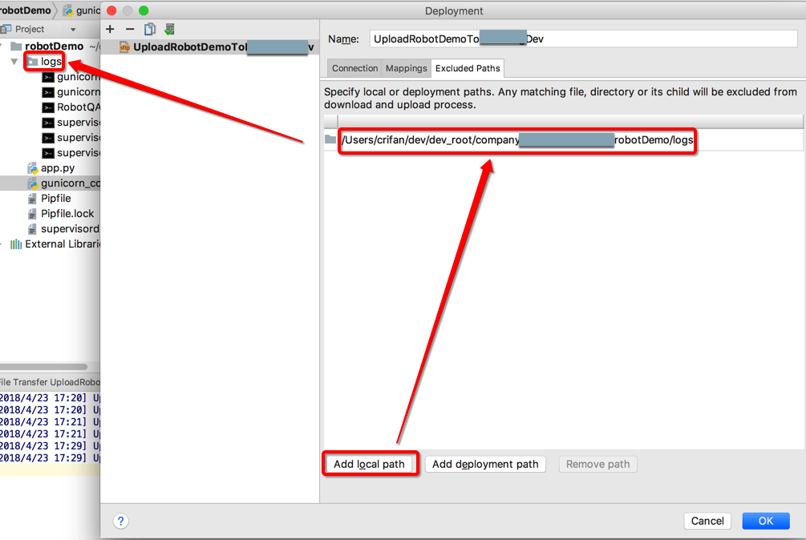

项目部署
开发和调试完毕项目后，会涉及到发布和部署项目代码。
PyCharm对于项目部署、代码上传也有很好的支持。
比如想要把本地调试好的项目代码：
/Users/crifan/dev/dev_root/company/xxx/xxxRobotDemoServer
上传到服务器对应位置：
/yyy_20180101/web/server/robotDemo
添加和配置Deployment参数
先去新增一个Deployment配置：
Tools->Deployment->Configuration

然后点击+加号去添加：
Add Server中，输入名字后，选择类型是：SFTP
- 说明：此处由于服务器中没有配置FTP服务器，所以用只要支持
SSH就内置支持的SFTP

对应的PyCharm的Deployment设置是：
Connection- 详细配置：
SFTP Host：xx.xx.xx.109- 服务器的IP地址
Port：22- 默认一般就是
22
- 默认一般就是
Root Path：/root- 选择之前，记得要先去设置好登录方式（用户名+密码，还是用户名+auth）
- 注意路径的设置：
- 可以点击三个点，去选择对应的路径
- 也可以点击
Auto Detect会自动- (默认)设置为当前用户的默认目录
- 此处用户是root，所以默认路径是：
/root
- 此处用户是root，所以默认路径是：
- (默认)设置为当前用户的默认目录
- 可以点击三个点，去选择对应的路径
User name：root- SSH的用户名，一般都是
root
- SSH的用户名，一般都是
Auth type：Key Pair（OpenSSH or PuTTY）- 密码模式：之前用的多的是，用户名加密码
Private key file：/Users/crifan/.ssh/id_rsa- key文件模式：后面别人用了私钥文件，则选择
Key Pair（OpenSSH or Putty）Private key file:选择之前自己创建好的，可以用于SSH登录的rsa的私钥文件- 比如此处放在了：
/Users/crifan/.ssh/id_rsa
- 比如此处放在了：
- key文件模式：后面别人用了私钥文件，则选择
- 如图
- 详细配置：
Mapping：- 详细配置：
Local Path：/Users/crifan/dev/dev_root/company/xxx/xxxRobotDemoServer- 自己本地的目录，写绝对路径，好理解
Deployment Path on server：/yyy_20180101/web/server/robotDemo- 注意：此处的路径是相对于
Connection中的Root Path来说的- 我此处的
Connection中的Root Path是/root - 但是此处还是
/开头的：/naturling_20180101/web/server/robotDemo - 其实更简单省事的办法是：点击三个点，自己选择列出来的路径，即可
- 我此处的
- 注意：此处的路径是相对于
Web Path on server：/
- 如图：
- 详细配置：
Excluded Path- 设置步骤
Add local Path-》然后输入对应的本地的要排除的路径- 
- 详细配置：
/Users/crifan/dev/dev_root/xxx/xxxRobotDemoServer/tmp/Users/crifan/dev/dev_root/xxx/xxxRobotDemoServer/logs/Users/crifan/dev/dev_root/xxx/xxxRobotDemoServer/runtime
- 如图：
- 设置步骤

如何使用=同步文件到服务器
之后就可以：
- 同步整个项目（有改动的部分)
- 先点击项目根目录后，再去点击
Tools->Deployment->Upload to xxx - 即可上传整个项目的所有文件（去除排除掉的）
- 先点击项目根目录后，再去点击
- 同步单个文件
- 可以（在修改了某单个文件后）右击该单个文件，选择
Upload to xxx，也可以直接单独上传该文件 - 上传后的提示
- 可以（在修改了某单个文件后）右击该单个文件，选择